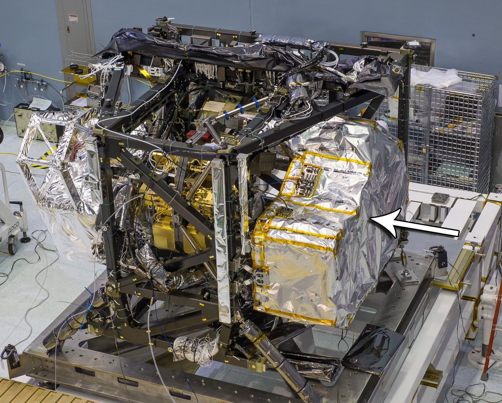

A quasar is a supermassive black hole swallowing gas so fast that the material around it outshines its whole galaxy. Finding even one in the young universe raises the question of how such a heavy object grew so quickly. Astronomers have now found two of them close together, seen as they were roughly 900 million years after the Big Bang, when the universe was about a thirteenth of its present age.
The pair is catalogued as J1602+4228AB and has been given the Hawaiian name Nāpōwawāʻenakaulua. The study, led by Silvia Onorato, a postdoctoral researcher at NSF NOIRLab and the International Gemini Observatory, appears in The Astrophysical Journal Letters.
Webb found it, Gemini split it
The second quasar showed up during a visual check of data from Aether, a survey led by Emanuele Paolo Farina of NOIRLab/Gemini that uses the NIRSpec instrument on the James Webb Space Telescope. Aether has gathered spectra of about 200 quasars, which the team says is 43% of those known from that era. In the data for one known quasar, J1602+4228A, the team noticed a companion. Earlier ground-based images had shown the two as a single source.

Follow-up with the GNIRS spectrograph on the Gemini North telescope on Maunakea, Hawaii, resolved the two quasars as separate objects. Onorato said the sky was clear and steady enough that the data took only two nights. A second Gemini instrument, GMOS, was used to test whether the fainter quasar might be a mirror image of the brighter one, created by a foreground galaxy bending its light.
"There is no definitive theoretical explanation for how a single one of these giant quasars exists so early." (Silvia Onorato, NSF NOIRLab, via Phys.org)
Heavy, hungry and close
According to the paper, the two quasars sit at a redshift of about 6.08 and lie just under one arcsecond apart on the sky, which works out to about 5.6 kiloparsecs, or roughly 18,100 light-years. That is around a fifth of the width of the Milky Way. Their black holes weigh about 1.5 billion and 400 million times the mass of the Sun, and both are taking in matter at or slightly above the rate usually thought of as a natural limit.
It is only the third quasar pair known from this early period and the most compact. The authors compared its existence with how strongly early quasars are expected to cluster, and found that a pair this close should be hundreds to thousands of times rarer than it appears to be. They suggest either that galaxy mergers in the young universe often switched on two quasars at once, or that this pair lives in an unusually crowded region.
Caveats remain. The paper calls the system a candidate pair: the GMOS spectra of the two sources differ, which favours two real quasars, but the team says a model of possible gravitational lensing is still needed to rule out a single quasar seen twice. A single system is also too few to say how common such pairs were.